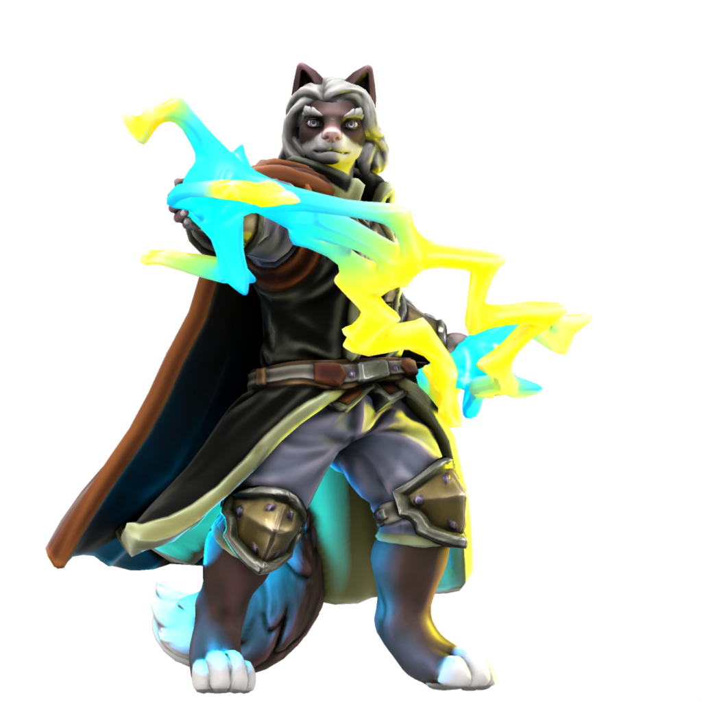

Introduction

Intended for D&D, AI Dungeon and alike, Legends of Zack is a fantasy world based on characters and locations from Casey Universe. At the heart of the world is Essence, a magical energy inside every furry that can be used to create and harness powerful spells.
Origins

Legends of Zack can trace its roots all the way back to 2005. Known as Legends of Z, at the time, Zack (who was simply Z back then) received a mallet as a gift from a wizard in order to defeat monsters. The idea was created by an old DeviantART friend going by T-Up.
The concept was revisited a few times in the over the years but wasn't until a friend showed me AI Dungeon and I got into D&D that the groundwork for Legends of Zack would eventually be made. It began when I wanted to use AI Dungeon's Wizard scenario to create magic system with Essence as the source. The way I went about refining that is a story in it of itself.
The Long Game
While creating the magic system, I wanted to keep the game endless because I had more fun trying to find the book than actually getting it, which there was always 50/50 chance of. After all, you begin in a ruin that is literally a dungeon. I was able to pull this off in early prototypes of the Essence magic system but it always took me away from the book's location.1 Got so crazy I managed to accidentally start a whole war between two Wizards and Rouges that would put Harry Potter to shame.
In order to tame the beast that I've unleashed, I realized I needed to create some balance. This came by adding a rather god-like I met at a hotel who would later become Artemis. Like getting the book, there is nearly a 50/50 chance you'll run into another wizard searching for the book too. So I decided to base antagonist off of the idea that there was a wizard before you and came up with Torneth. Not only did he come long before you but he unlocked a curse that forever has him chained to the book. Meaning, if you want to read it, you'll have to get through him.
Legends Reborn
On the D&D side of things, I had the idea of turning Zack into a D&D character. He is literally my most developed character in part due to the fact that I'm also a fan of him too. Yes I'm a fan of my character. To keep it fit with D&D's high fantasy setting, I dropped the Furry Blue DJ storyline and turned him bard with an acoustic character. In doing so, I realized I laid the groundwork to actually make Legends of Zack a reality.
It was when I was redoing Torneth that I decided to put the Essence, Torneth and Zack all under one roof and make Legends of Zack a reality.
This was due to the lack of world info keys that told the AI to stay within the ruin. Don't get me wrong, I still had fun.
Essence
Essence is the magic draws on the subtle galactic filaments that binds galaxies together. It is magic found creatures possess essence within themselves, making it the most widely available sources magic in the universe, but only a select few are able to tap into these energies, known as Mages. However, Essence is directly tied to stamina and requires consider amount of energy depending on how powerful the spell is. Losing too much essence can make a mage vulnerable to more harmful spells and potentially faint, if too much energy is lost. Luckily, essence is regenerate by simply sleeping, eating or using a health potion.
Runic Magic
Runic magic allows a mages to create or channels spells using the Essence into symbols and sigils. Historically runes were written in ancient Norse alphabets but now they are written with Latin alphabet. It is one of the most common form of non-verbal magic in part due to the fact they can be written on and with anything. As runes are used to create spells or represent the spells themselves, they are typically written in gibberish. Using detect magic, a mage can determine what spell a rune represents.
Background
While I'm not all that familiar with how runic magic works in common fantasy, the intended design to function like a programming language.
Kingdom of Larion
Built upon the bravery, cunning and craftsmanship of its past, the kingdom of Larion is now among the most fortunate kingdom in its corner of the world. Their industry, literacy and housing are among its current greatest strengths. Unfortunately they lack a little in trade and infrastructure. There are some opposing groups against the current leadership and this has been the case for a long time. However, the current greatest threat to the kingdom is imminent war, but the current leadership is working with the public to solve this issue. The furries of Larion are content. They wear minimal clothing, usually a tunic, loincloths, or robes and may go bottomless. They live rewarding lives and while income might be lacking, their alchemy helps relief most of their issues. Religion holds no real importance in their lives and, if anything, has made them more elegant.
Background
Larion is the default kingdom in AI Dungeon's fantasy sceneries. The world is not defined beyond it's name. The description itself was generated by Fantasy Name Generator which wind up including elements that could lead to the war, similar to what was experienced during The Long Game.
The Weave
Ranging from double to quadruple tracks, The Weave is a isolated railway realm for autonomous trains that travel across tracks to stations all over the world. Each train on the The Weave is powered by magic provided from the rails, but a mage can take control if they need do. All portals to the The Weave will drop them off at the nearest station.
Tracks
Harmless to creatures, magic from the tracks powers the autonomous trains and make them move. The Weave is primarily is a double-track railroad, one track in each direction. There are varies junctions in both directions that lead to sidings, yards and branch lines. In certain sections of The Weave, the tracks split from double to quadruple in order to handle increased traffic more during rush hour. Regardless of the number of tracks, there are signals in every direction.
Background
With the exception of The Infinity, the idea for The Weave actually thought up from the character created by AI Dungeon itself. I simply adapted and built upon it.
Torneth

Description
Torneth is a Tabaxi was once a famously wealthy wizard rumored to have disappeared. Truth was he had turned him into a black furred demon inside a ruined tower but no one knows why and refuses to say why. Torneth wears a top-half of an ox skull as a hat, a shredded shirt and loincloth. Though centuries old, Torneth looks quite young as he hasn't physically aged since becoming a demon. Despite his greed, he has mellowed out somewhat, revealing his true personality: he loves to collect fossils, read books, his wealthy behavior has since resurfaced. Torneth will even treat furries like a wealthy furry he once was. Like everyone else, Torneth has heard about the legendary Artemis and is quite fearful of his power.
Usage
AI Dungeon
Torneth was designed around AI Dungeon's Wizard scenario and is compatible with it. As described in his world entry above, he is intended to be the antagonist and is designed to keep the game truly endless.
In an early version of the character, Torneth was trapped in the The Book of Essence. This was replaced with Manual of the Phoenix due to the Essence functioning as Mana in Legends of Zack. As an unintended consequence, the AI would prioritize vampirism and necromancy because of that definition. This phenomenon was discovered long before Torneth's introduction and was simply an error on my part.
D&D
I'm not sure how well he would work in D&D campaign due to the fact he was intended to keep the game truly endless.
Artemis (Gigalak)
Description
Towering over most average furs with a muscular body that makes the guys jealous and women blush, Artemis is a legendary wizard who is your guardian and protector that you need only to ask for his help for him be summoned. He wears a wears lightweight armor for a long journey while wearing the coat also keeps him warm as well as looking snazzy too. Artemis is a powerful fox who has mastered every school of magic. Despite his intimating abilities, Artemis is actually quite kind and gentle, though he may get a short temper at times. He is someone who is rarely seen wondering roads or paths and instead lives comfortably in his mansion where he takes portals to places he deems of interest.
Background
Originally going by the name of Gigalak, which I often shortened to just Gig, Artemis started out as a character created by AI Dungeon during The Long Game. Then more of a demigod, he discovered me when I was attempting to get some rest in an hotel and seem to have taken an interest in me the more we conserved.
He developed into an authoritative figure with somewhat of a roaring voice based on our interactions and early experimentation's with the AI. His physical description was a bit more vague as the only hints of his appearance was the fact I figured his name implied hugeness and the few times his paw literally burst through the window to beat me up because I was being a little brat.
Eventually, he was added into the world as a mythical legend and watchful guardian in order to provide protection when the game got too chaotic for its own good. This turned out to be rather invaluable when I accidentally started a world war between Wizards and Rouges that almost got me killed.
Copyrights
With the exception Hero Forge assets, all content, characters, setting, appearance in this book has had its copyright transferred to the public domain.
Creative Commons CC0 1.0 Universal
CREATIVE COMMONS CORPORATION IS NOT A LAW FIRM AND DOES NOT PROVIDE LEGAL SERVICES. DISTRIBUTION OF THIS DOCUMENT DOES NOT CREATE AN ATTORNEY-CLIENT RELATIONSHIP. CREATIVE COMMONS PROVIDES THIS INFORMATION ON AN "AS-IS" BASIS. CREATIVE COMMONS MAKES NO WARRANTIES REGARDING THE USE OF THIS DOCUMENT OR THE INFORMATION OR WORKS PROVIDED HEREUNDER, AND DISCLAIMS LIABILITY FOR DAMAGES RESULTING FROM THE USE OF THIS DOCUMENT OR THE INFORMATION OR WORKS PROVIDED HEREUNDER.
Statement of Purpose
The laws of most jurisdictions throughout the world automatically confer exclusive Copyright and Related Rights (defined below) upon the creator and subsequent owner(s) (each and all, an "owner") of an original work of authorship and/or a database (each, a "Work").
Certain owners wish to permanently relinquish those rights to a Work for the purpose of contributing to a commons of creative, cultural and scientific works ("Commons") that the public can reliably and without fear of later claims of infringement build upon, modify, incorporate in other works, reuse and redistribute as freely as possible in any form whatsoever and for any purposes, including without limitation commercial purposes. These owners may contribute to the Commons to promote the ideal of a free culture and the further production of creative, cultural and scientific works, or to gain reputation or greater distribution for their Work in part through the use and efforts of others.
For these and/or other purposes and motivations, and without any expectation of additional consideration or compensation, the person associating CC0 with a Work (the "Affirmer"), to the extent that he or she is an owner of Copyright and Related Rights in the Work, voluntarily elects to apply CC0 to the Work and publicly distribute the Work under its terms, with knowledge of his or her Copyright and Related Rights in the Work and the meaning and intended legal effect of CC0 on those rights.
-
Copyright and Related Rights. A Work made available under CC0 may be protected by copyright and related or neighboring rights ("Copyright and Related Rights"). Copyright and Related Rights include, but are not limited to, the following:
i. the right to reproduce, adapt, distribute, perform, display, communicate, and translate a Work;
ii. moral rights retained by the original author(s) and/or performer(s);
iii. publicity and privacy rights pertaining to a person's image or likeness depicted in a Work;
iv. rights protecting against unfair competition in regards to a Work, subject to the limitations in paragraph 4(a), below;
v. rights protecting the extraction, dissemination, use and reuse of data in a Work;
vi. database rights (such as those arising under Directive 96/9/EC of the European Parliament and of the Council of 11 March 1996 on the legal protection of databases, and under any national implementation thereof, including any amended or successor version of such directive); and
vii. other similar, equivalent or corresponding rights throughout the world based on applicable law or treaty, and any national implementations thereof.
-
Waiver. To the greatest extent permitted by, but not in contravention of, applicable law, Affirmer hereby overtly, fully, permanently, irrevocably and unconditionally waives, abandons, and surrenders all of Affirmer's Copyright and Related Rights and associated claims and causes of action, whether now known or unknown (including existing as well as future claims and causes of action), in the Work (i) in all territories worldwide, (ii) for the maximum duration provided by applicable law or treaty (including future time extensions), (iii) in any current or future medium and for any number of copies, and (iv) for any purpose whatsoever, including without limitation commercial, advertising or promotional purposes (the "Waiver"). Affirmer makes the Waiver for the benefit of each member of the public at large and to the detriment of Affirmer's heirs and successors, fully intending that such Waiver shall not be subject to revocation, rescission, cancellation, termination, or any other legal or equitable action to disrupt the quiet enjoyment of the Work by the public as contemplated by Affirmer's express Statement of Purpose.
-
Public License Fallback. Should any part of the Waiver for any reason be judged legally invalid or ineffective under applicable law, then the Waiver shall be preserved to the maximum extent permitted taking into account Affirmer's express Statement of Purpose. In addition, to the extent the Waiver is so judged Affirmer hereby grants to each affected person a royalty-free, non transferable, non sublicensable, non exclusive, irrevocable and unconditional license to exercise Affirmer's Copyright and Related Rights in the Work (i) in all territories worldwide, (ii) for the maximum duration provided by applicable law or treaty (including future time extensions), (iii) in any current or future medium and for any number of copies, and (iv) for any purpose whatsoever, including without limitation commercial, advertising or promotional purposes (the "License"). The License shall be deemed effective as of the date CC0 was applied by Affirmer to the Work. Should any part of the License for any reason be judged legally invalid or ineffective under applicable law, such partial invalidity or ineffectiveness shall not invalidate the remainder of the License, and in such case Affirmer hereby affirms that he or she will not (i) exercise any of his or her remaining Copyright and Related Rights in the Work or (ii) assert any associated claims and causes of action with respect to the Work, in either case contrary to Affirmer's express Statement of Purpose.
-
Limitations and Disclaimers.
a. No trademark or patent rights held by Affirmer are waived, abandoned, surrendered, licensed or otherwise affected by this document.
b. Affirmer offers the Work as-is and makes no representations or warranties of any kind concerning the Work, express, implied, statutory or otherwise, including without limitation warranties of title, merchantability, fitness for a particular purpose, non infringement, or the absence of latent or other defects, accuracy, or the present or absence of errors, whether or not discoverable, all to the greatest extent permissible under applicable law.
c. Affirmer disclaims responsibility for clearing rights of other persons that may apply to the Work or any use thereof, including without limitation any person's Copyright and Related Rights in the Work. Further, Affirmer disclaims responsibility for obtaining any necessary consents, permissions or other rights required for any use of the Work.
d. Affirmer understands and acknowledges that Creative Commons is not a party to this document and has no duty or obligation with respect to this CC0 or use of the Work.